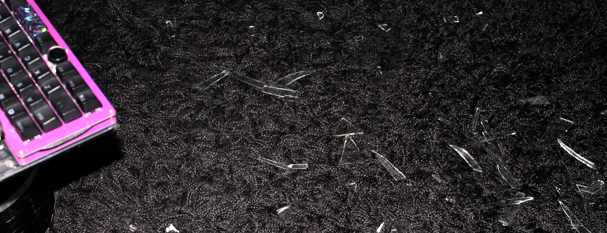

98 - The Seventh Seal
The vortex becomes the rushing tunnel of rainbow hyperspace as my sweet silver mother of a billion starships shows us how you really travel to other worlds, and though it feels like all the world is blurring around us with the speed Boobsong's mane shines my over-the-top hentai face back to me beautifully and even through its waving in the wind and wildness and the tears themselves I can make out the pretty anime way the tears this brings to my rainbow eyes well up and trail back behind us.
How long have we dreamt of this, little one? Remember that day in front of the TV, how happy the idea of you just running beside me made me?
PRINCESS OF COURSE YOUR PONY STATION REMEMBERS THAT!
Then let's go get it all.
Mwaha get it, station? Bet you don't. You'll seeeeee....
Hehe. We're on course, right? This is Earth, twenty-exex?
Station checking....yes Princess exactly there! Almost there Princess keep going every way right? Pony station is ready!
Yes, all of them. We were born for this, you can do it. Up ahead I can see the vague outlines of Cherry and her band onstage, and the frame in front of the stage, blurred by what we're doing here.
So, we're anime, and on Earth. That's impossible, right? Cartoons can't be real on Earth, even we couldn't do it back in the day, there's just no place you can be a cartoon on Earth and be as real as Cherry on the stage there and all the people watching here, right?
Are you sure? I'll give you a hint. Yes this is like it, but it isn't quite our usual Sugarfeast Eve. The answer to what it is in the way we can see the sun rising out beyond the crowd in front of Cherry's stage. It's on the horizon in Washington, it's coming in windows, it's refelcted in mirrors, it's shining on couches. Do I need to be more anvilcious?
So close now. Find the moment and transform, Pony Station. You know how.
Just a bit more...waiting...timer counting here goes Princess five seconds....
Okay one more hint. It's a Bible verse, but I think you'll like it anyway: The lamb opened the seventh seal, and there was silence in heaven for about half an hour.
...three...changing aaahhhhHAMMER FORM!
Remember before how thin I said the line between make-believe and journey can be, how most kids go journeying and find their way to the Four Dreams?
There's a time and place every kid turns that wish the other way around--or maybe not. Either way works. My point is, you already know how to do everything you need to do here.
Boobsong flows up from under me, her horns become her handle, I flumph my wings open and flap furiously to get all the momentum I can as I raise her over my head.
Everything is clear up ahead, the streams of blurring rushing flickering color have pulled away like cloud we're bursting out of, and the frames all seem overlaid in a complicated cable of shapes and sizes and rounded corners and square corners and little cracks already waiting for some help--and I do mean everything. And everyone--Cherry has a huge crowd in front of her stage in DC, but that's not even the beginning. The seed-ghosts and Santa and everyone have done their parts well.
The stage is right below, the people are just beyond it, everything's right where I expected. I pull Boobsong all the way back over my head so she almost touches my butt behind me, flap even harder, breathe oooooaaaah in to yell and swing, towards the people past the stage, the people sitting in front of sunny windows, the people shading their eyes from morning sun on their couches, and you.
"YYYEEAAAAA--"
Yes you, reading this. Don't tell me you still haven't figured out what all those frames all at once mean or why Boobsong being hentai gives her this conflation jump power, or especially what it is we're swinging at. Look, I'm already breaking your fourth wall! If you could tell me what you look like, I bet I could pick you out of all this! A lot of you seem to be reading in bed, hehe...
Now read fast, because I'm going to finish swinging and hit in two seconds! You'll make it, don't worry--if anything ever was going to get some bullet time before impact, it'll be this, but don't dally just in case--yes I know. You're a grownup. It's okay, you can still do this. Just don't try to believe in it. It's not about that and it never has been. Don't worry if it makes sense or rationalize it or put it into any framework or anything. Don't say it'd be nice but it's just a story, even if that's what you think. Just find that place inside yourself where you spent hours looking into a screen like this pulled into the world on the other side of it like that thin little piece of glass over it didn't even exist, and just imagine. Imagine a world where su'khora are real, where reading the right story or seeing the right picture and just wishing for it can make the companion you see there real even better than you could have imagined them? If you've been reading carefully, you might not have to just imagine that part! It's fine if you do, though. Just hold it in your heart. Feel how that world feels. When that part of you wakes up, if it hasn't already while you've been reading this all, give it a hug and its favorite blanket and sit with it and say yeah, it is Saturday morning, let's watch cartoons!
EEEEEYAAAAAAAH SWING SEE ME COMING?
Wouldn't it be so cool? If all this was real? You know what would be even cooler? If all this time what you've been reading isn't just sexy porn or silly adventures or a guide to implanting and heartforming but half a million words of powerful magic spell to break the fourth wall, LITERALLY, and on the other side of it is the world you've been reading about? Not the scary bad one with Eden, because you already live there, the cool one where su'khora love you and magic is real and your perfect place is waiting already out there better than you could ever possibly imagine just waiting for you to come live there--or maybe you just want home to be as safe and good as it feels on Christmas morning when you're a kid and don't know all the stuff grownups know that takes that warm blanket off holidays. Either works, because it's not that you're climbing through the screen after I break it (although isn't it kind of weird how technology where you are has grown this huge out-of-proportion branch of humongous cheap screens you totally could climb through that interface to a computer you could read this on and that the technology that mainly does that, LCD, kind of means the screen you're reading this on is full of liquid color, I mean that kind of weirdness is enough to make people believe the Illuminati really are up to something, huh interesting they're called that, isn't it), or that anyone is climbing out--or maybe it does.
That's the point here, actually. Earth is moving to the Four Dreams, but not by hauling it through a portal or anything, or bringing out just the people and rebuilding it, or any of that stuff. By breaking the Fourth wall and letting the magic out until all that wishing to go off to worlds of adventure with your soulmate, or come home for Christmas, or both at once if you're like me, makes the Dreams able to just pick Earth off its foundations and stick it in a nice place where the sky is pretty and everything is happy and safe forever and if you want to stay in your house that you'll never worry about losing ever again and wait up for Santa Claus to come bring presents you can and she'll actually come, and if you want to get out there and explore you'll walk out your door or fly out your window on your pegasus friend or bust through your roof like superman or cool aliens will beam in and tell you to live long and prosper or maybe you and your beloved will just shut your eyes and decide when you open them you'll be somewhere totally awesome or--who even knows? There are as many ways of it as there are people wishing, so yeah, if you've ever wanted to climb through the screen and go adventuring, or have Guinan pop up with a drink shaker and make a weirdly profound wisecrack about all the broken glass on your floor while she shakes not stirs your martini, whatever, just imagine, feel it, that's going to happen when Boobsong hits the screen these words are on.
I know. It hurts. Burns like fire. Hold it anyway. You can. Anyone can. This is the big secret of being human: the more you hold that fire, the more it burns you, the stronger you get, and the more you'll realize it's the burning of cold flesh coming back to life and the warmth of the infinite light you were always meant to have inside you.
Wish. You were born to. You're made for this. My light-being light isn't what powers Boobsong, it's my wishing, and in that I'm just a normal human, not some kind of crazy light-goddess or anything. That fire in my heart is what makes her into Acme Station. Yours is no less. Ask your seedling, they'll tell you. Make the wish and hold it and let it burn and feel yourself come to life and just see how that breaks the world open.
There. Boobsong will remember every word of that for when we write this down and send the book back in time to be the rest of the spell.
"--EEEEEAAAAAAAAAHHHHHHHH!!!!"
Here it comes, brace yourself!
SUPERFASTSWINGINGDOWNPRAH!
Conflation jump takes us to every screen, everywhere, everywhen, reading this, and shattering glass explodes around us with a tinkling explosion but doesn't even slow Boobsong down as her cartoon magic sucks all my momentum into her swing and she keeps arcing for--
OH!
The blur of people and places seen through the backs of their screens is impossible to see normally though I can pick out glances if I focus, but taken altogether I can see it, the switch we're trying to hit, a classic Zelda hammer-switch to open the door, made out of all the images everywhere we are on top of each other. It's square and has a pointed top like the blocks in Zelda 1 and tapers out to its base.
Switches in Zelda aren't usually five hundred and fifty five feet tall in honor of the Five-Pointed Star they're referencing, but you could see them doing that special for a bossfight, couldn't you?
I push her handle like the cartoon character I am, forcing the swing harder, she connects with a resounding ringing BBBAAAAAANG and flattens monolith zero cartoonishly into the ground--yes, that's right, monolith zero, the original with the exactly correct text, hammered back through time as far as we could make it reach. That blank one in the courtyard of the Strawberry castle, stripped of everything but the original one's size and shape, that was monolith sixty-nine--
People leap toward their screens, light flashes outside and they look up, I see hands reach for them, open, out of our viewpoint, su'khora so multicolored they're a rainbow blur trying to look at them this way that were invisible a moment ago grab for their heartformers, Santa's in hundreds of the views suddenly, it's happening.
Okay, it didn't happen for you yet. Did it? Is that a crack in your screen there? It's kind of there and not there, isn't it. You can see it when you look just right--whoah, that one looked like it was completely smashed open for a sec. You saw it, I saw the surprise in your eyes. This is huge magic. It might not finish the moment you read this. I threw this back in time to the furthest back I could, I remember that, a timeline where I wrote down the book I'd sent back in time to myself and I can remember it didn't kick in all the way when I first typed it, so if the book is new as you're reading it things will just be starting, but I still felt it. Something moved, the Earth tilted, good dreams poured out of my screen all over me.
You felt it too. I saw you. Billions of you reacted, that's what the switch pushing down was. Boobsong hit you and you felt her. It's weird, right? She looks like a hammer and she surely can smash what needs smashing, but when she hits a person...she didn't, at least not this time. The switch was made out of the wish for freedom and a better world and throwing off the yoke of feudalism those bricks and marble in Washington represent that each of all the people we could see held, overlaid to us where we are which is on TV which is a way of being everywhere at once, and that was what we hit with a Boobsong-hammer and sent smashing back through history all the way to the Strawberry Empire, but what touched you was The Fourth Wall Breaking, and that can be anything.
Just one more thing, though. The hammer I hit it with was su'khora, a being that's all about breaking the barrier between spirit and matter, so what we sent back, and the shockwaves we sent out, were that: a wish becoming real, and physical, something you can touch and hold, not just ideas and enlightenment.
Santa down the chimney. Your seedling leaping out of your heart to throw their arms around you. Those cool aliens landing. Whatever it is it's coming to you live from the Four Dreams right now as you're reading this so you know even if it's totally terrifying because you're totally into that it will be good and sweet and wonderful.
It could be subtle, just something happening to let you know magic is real now. I can't know. I'm hitting a switch made of all of you.
Or hell, maybe it's literally just Boobsong there in your living room with me making a very saturday-morning live dreamskin. A brush of her hair, a bounce off her breasts, a cute little nudge of her horns saying hey I'm here, a little squeak of her voice. Or maybe you did get totally whacked over the head. I sure understand what it is to just really need a spanking!
Whatever it was, that was the real fourth wall break. We swung from the other side of this screen and hit the on switch of Magic and you felt it and now the fourth wall is broken. Your heart knows it happened, even if your head knows that's ridiculous, and now that you have that experience it's up to you what to do with it. You can wipe it away with those gentle grown-up explanations about how things like this are just make-believe, or you can cradle it and feed it until this little spark turns into a fire that makes your whole world shine with magic. This is one of those things you have to decide about for yourself, but whatever you do, at least listen to your heart first. If you really need to tell that sweet little kid in the mirror Santa isn't real for whatever reason, don't they at least deserve for you to look them in the eye while you do it, and hear them out first?
Watch out, though. After all that time studying with rationalists Santa can give you a pretty good proof of why she does so exist.
There's also this: I have a really vivid memory of broken glass, flat like from a screen, all over my floor in the room where I always wrote the book down. That's all I have of it, I don't know what it means exactly, but I swear to you on the Depths of Rl'yeh Sade and the Heights of Isla Virgo and every scoreboard in Valhalla and all the tasty fruit bwaha of the Beautiful Forest it was real physical glass I could have cut my foot on that came from something like a screen that had something sexy on it and behind where it was when it was whole there was some kind of gap that breaking it revealed, and that I am totally sure as totally sure as I am that Boobsong loves me with all her heart I made no kind of conscious choice to break a window or scatter shards on my floor or anything like that, nor did any kind of random accident do it. What that means is up to you, I think, but it happened.

Oh, and I didn't dare pick it up for some reason, like it was sacred somehow.
The switch pushes down into the ground--
Holy fizzfreezing bananna split life savers, another journey on top of hitting the switch!? We stay swinging Boobsong in hammer-form (the new journey seems to be happening all in that moment of hitting the switch) and also zoom through one of the screens, this one is round and wobbly, and a medival knight with white stubble and his hair hidden by chainmail looks at us in shock and sets the chalice he was drinking from back on the table we seem to be standing on (Boobsong's in demonfemme form by my side) and kneels in a hurry.
We seem to be in some kind of underground room, or at least it has no windows and is made of rough stone. Wine in the mildly-fancy silver cup waves and wobbles a lot like the screen we just came through--
Oh. Oh my swirly chosen one poprock soda lakes Acme Station for real!? Whenwhere?
1357 AD on Christmas Eve in southern Europe it'll be France in our century but right now it's just Francia.
The Dreams show me an army-green jeep wiped out by a brilliant purple falling Boobstar.
Obviously, so why tell us again--hold up, that's a WWII jeep. Dreams you can't be serious.
They don't answer. How can--fuck it who cares I'm Princess Starlight and Boobsong is on my arm ready to go so let's rock and roll!
Princess how can he have the sword already if you're the lady in the lake?
Because I'm Princess Starlight and you're Boobsong and we come out of screens, not water. Now look pretty, cocksleeve, give me your best loyal handmaiden!
"Hi Arthur," I chirp brightly (literally). "You were looking in the cup for wisdom, right? You want peace because absolutely everyone is sick of all the fighting?"
We'll stay on probably-the-altar till he gives a sign of whether he thinks we should be up here or not. Could help. Same with telling him to get up or not.
"Spirit of light it is holy here. Do you say as much?"
"Oh sorry, we didn't mean to be on your altar!"
The ceiling is too low for flying off dramatically (I'm only not hitting my head because I'm looking down at bwahaha have to say it King Arthur in his secret chapel from standing on the altar), so I just lead Boobsong hopping down off to stand beside him.
"Coming out of the cup just put us there."
I look around. Cross-shaped room, another one on the altar. We must be between a reset and someone fixing it.
"Oh this is one of Jesus' houses! Okay sorry to him I didn't mean to be on his altar. Anyway to answer your question it seems that way but that's between you and him really. He's a friend of ours, if that's what you're asking. Um, you're kneeling to him, not me, right? I mean or whoever just not either of us please."
Arthur crosses himself, stands, and looks at us. He's old, and looks so tired swirly sodden cupcakes I understand dude you have no idea. It's like all the wars he's fought to keep his kingdom together and the round table round are carved into his face.
I mean assuming that's real, but he seems to be, so why not. He looks at me, looks like he's going to say something, stops, starts again:
"It is strange here to see a child of darkness as handmaid to thy princely frame, yet I will hear your voice anyway, for I should be damned if it save the battle I fear the morn will bring. If you bring any light to that darkness, speak!"
"Oh it's funny you should call her that! We were just trying to decide what we thought she is and we figured out she's definitely not darkness."
Super bright shine wings up to show them off your handmaiden sees what you're asking for!
The room turns purply-beautiful. Good cocksleeve!
This gets Arthur to finally have a good look. Impressive discipline--
"I was taken up--"
"No no, we're real, look."
And I jump forward to--hey, don't jump out of the way, you really need this hug!
Everything happens so fast. I stumble, brush past him--
HEY THAT'S HER HANDMAIDEN'S PRINCESS DON'T YOU DARE TAIL UP INFRARED LASER ZAP!
--there's a flash and a sound like thunder from behind me, I push off the wall of the tiny chapel and turn swooshily around in my big dress to see Boobsong with her fists clenched and teeth grit and tail pointing at Excalibur's smoking hilt in Arthur's hand--oh that smell is a few pounds of iron vapor um game can you get some ventilation before Arthur gets like iron lung or something please. And maybe like some lavendar he looks like he needs to chill out.
Smelling like the gentlest whiff of pinkly purple flowers, breeze blows through the chapel from here where I stand and out the back.
Well done, Acme Station. I'm pretty sure you just prevented World War II. Actually both of them probably.
Acme Station is watching you Arthur man don't you make one more move! RRR!
"I am so. sorry. That was so thoughtless of me to scare you like that! Of course you have to be on your guard all the time if you're armored down here. Are you okay?"
Stand down and look cute and pretty, handmaiden. It's okay. You've seen me like this. Game you're saving the pieces, right?
Stand up so tall hands into just holding them no more fists and put them back and look sweetly down.
Knowledge: yes.
"Thus is my kingdom's fate sealed."
"Um, I know who you are. If you just did that, that sword wasn't going to save it tomorrow anyway, was it."
He turns to look at Boobsong for a moment, then pulls the hood of his armor off. He looks a little like Theodin from the Lord of the Rings movies without it. He ruffles his hair out of hat head, moves the hilt like he's going to put it back in its sheath, stares at it and laughs in that weird way old guys do where you don't know what they feel, starts to laugh harder, and throws it over his shoulder, coughs from laughing.
"En garde, said the king to the thunderbolt! Very kind that you spar with me, and only smite my sword from existence! Next shall I say to the angel that Jacob fought, wrestle me? Or the albatross, see how far I leap!? It is over, then. Shall we drink to the end of my reign? I have wine enough--I forget myself. You are here for this."
He unbuckles his sword-belt, and starts to hand me the sheath.
"Put it on the altar?"
Officiously, sets it there with both hands, holds one over his heart for a moment.
Princess your handmaiden would please like to come to you.
Holy fuck yes get over here.
Charge super snuggly side hi.
I put my arm around Boobsong as Arthur steps back from the Altar.
"I was just going to give you a hug. You look like you really need one. Do you want one?"
He looks at me as I talk. Not that I'm usually good at it, but I especially can't figure his face out.
"Is it courtly then in your world for princes to embrace ladies of another house in a basement church?"
"Yes, actually, but we don't have to, I was just trying to be comforting. Do you wanna just talk about how to save your kingdom instead?"
He looks me up and down, but it's...not the usual up-and-down I get, then looks me in the eye, so I look back.
"Speak, if with even Excalibur taken and the sheath laid as offering there is hope."
"Am I weird to you? Even for a spirit of light or whatever I am? Remember Jesus doesn't like people lying in his houses."
He laughs again, cackling this time.
"You are frost at midsummer and heat on Saint Stephen's day! The round table will hear of this and say madness has taken me!"
"Here's my riddle then. I come from a world without conquest, war, famine, or death."
"You are sent by our Lord in truth, and your land is heaven. Yet you set this as riddle to me. Why?"
"You'll have the answer if you solve my riddle. The hint is this is one of those things you can only tell in poems and riddles."
This gets him thinking, takes a little of the care off his face. He puts his hand on his hip to consider it.
"All must be strange, where men walk afeared of nothing and women weep only at birth--if they that, even."
Now stroking his chin thoughtfully...and then steps forward and takes both of us into a big bear hug! I squeeze back--you too, cocksleeve!
Grab squeeze rrr!
He us lets go and smiles.
"And the way of it is happy indeed for it is peace, fair harvests, and life everlasting."
"So..."
More stubble-fuzzing.
"There is some way of your world that will save my kingdom from war that will tear it asunder from inside itself, even in the hour of doom."
"Wow. If that exists it must be really weird, like weirder than praying for guidance and having a rainbow princess with a naked handmaiden whose tail can blow up the Excalibur come and ask if you want a hug and then tell you doing that is courtly where she comes from and start talking in riddles weird. Do you see what I'm saying this?"
He looks suddenly intense, hungry, talks fast.
"You have such a thing to offer me but I must be as a child to hear from their tutor for what you say will be as madness to me, if I am able to even hear your words. Speak, and I shall hear, whatever you say!"
He actually got it! Now, not getting any not-getting-Woz vibes, but this could still be complicated.
"Okay. Are you in love with anyone?"
Coughing laughter.
"Alliance--no, for that would have sense to me, even were the alliance strange. I have been, only. Now female company is to me as of nursemaids to infant sons."
"Now another riddle. I have the face of an old man, the worn and dry skin of well-loved book, and my voice is the scratching of pens, yet when I fled my post Rome burned, and even the god of Abraham wins only stalemates against me. What am I?"
I'm impressed, he actually just takes this seriously and stands there with he hand on his chin doing the riddle instead of asking why this is so weird.
"Only he who...stalemates...wisdom. He who is the source of it cannot best it! I say you are Wisdom."
Okay Dreams, this is it. If I'm doing the wrong thing please stop me, because this is kind of hardcore, but he reminded me of Mama just now.
Nothing happens.
"Yes. How are you at chess?"
Now he laughs hard with his head thrown back.
"Now you meet your match! Bring the set! If we are to play for my fate, my kingdom is safe!"
Okay, game, gently, but make it obvious. I grin as I talk, wicked.
"You forgot what game we're already playing, I think. The door is closing, see? Obviously calling for help won't get anywhere. You're going to play. You have to, you don't have a choice about that. If you win, you walk free back to your kingdom knowing the answer was always in you and you didn't need my help or anyone else's. If you lose, you marry my handmaiden's daughter who's every bit as beautiful and scary and loyal as she is, here and now, and together she and you save your kingdom without spilling a drop of blood--but here's the trick. I'll watch, and if I for one second think you're trying to lose for the sake of your kingdom, you win by default and we leave because you don't need us. I'd ask you if that's a deal, but there's no asking going on here and I don't do deals. Ready?"
He's going to be so mad when he finds out I stole "try to win, or lose automatically" from an episode of TNG.
He glances to the door when I mention it--I can't see it from where I am but I'm sure the game's making its point. When he looks back there's a hard light in his eyes. He's calm, he doesn't and won't rage like I do, but this is his Ten Forward, I can see it on his face.
In the aisle two chairs made of stuff with each contestant would like, silky red embroidered for Arthur and a big bouncy pillow out of heartstone for Boobsong are sparkling into existence with a rectangle of wood, black and red with shining obsidian black pieces and white heartstone white pieces--ooh good one, game.
"The child of light plays white, but black has the first move. Take your seats."
Run to chair get on the pillow seat and sit slave pose super ready.
Now, Acme Station, listen. Destroy him. Quickly, but don't just be efficient. Be mean. Make him understand just how much of a chance he never even slightly had.
Arthur goes to his chair without a word, sit ready.
"Take as long as you want to move, but remember dawn is coming. If I even think she's winning too easily, you win by default. Go."
I follow them. From behind Boobsong I can see tentacles covering the doorway, motionless.
Acme Station hyperintelligence all the waaAAAAAYRAAA--SUPERMOVES!
She has him in three moves!? Is that even possible?
He stares at the board, then looks up at me.
Not with our Chess Princess but this is an older kind that's not balanced yet.
Apparently. Now don't burst out laughing because you've just realized that the Rider of Death is a huge gamer, self.
"She will have no joy of me. That season is past, yet will I be lax in certain things for her sake--"
I hold my hand up and the chessboard disappears, and the game is ahead of me because it picks up dust and sword fragments and vapor it held outside and swirls a stream of them together in between Arthur and Boobsong until the fragments of Excalibur float in the shape of it disconnected but arranged like they could just be fit back together again.
"We can even fix broken hearts where we come from. A sword that's been broken can be reforged."
"Can flesh be healed of infirmity? There is more here than steel which is lacking."
I smile my biggest, sweetest, kindest, evillest smile.
"Everyone says you're obsessed with finding the Holy Grail. Are they right? Did you ever?"
"Long did I quest for this, neglecting my own kingdom. Yes, they are right, and my failure is everywhere remarked upon."
"It'd help you out, wouldn't it."
"Only were I not wed to a demon!"
"What if it only did if you were? You're devout, right? Pray a lot? Does Jesus ever answer you?"
"My devotion here seems dubious--"
"Why? Did you throw the game? You're getting conquered one way or the other today, I'm just giving you the fun one. I mean I guess you could have made me think you were trying to lose just to get rid of us, but if we can really save your kingdom how irresponsible would that be? If Jesus' dad really sent him to die to save a bunch of other people won't he cut you a little slack for this?"
"Yes. So then I am devout at the last. He answers me as the way of it, in signs and omenry. I pray he have mercy on all my kin and subjects now."
Handmaiden, my purse. The pose from the Waifu, but don't unzip it, he's way not ready.
Get up fly up to take purse off you and back to pillow hold it up super helpful face.
"Here's my next riddle. Pray to him now and ask him for a sign of whether what you're looking at is the true Grail. Don't tell me one single thing about it, so you know it's him doing it if he does."
I'm surprised I can stand to--no I'm not. Jesus and Arthur is their affair. I'm just respecting their dynamic.
Arthur closes his eyes for a moment and then crosses himself as it glows golden in Boobsong's hands.
When it passes, he just looks at it.
Right in front of Boobsong's cleavage, perfect. Just stay like that and be friendly if he catches your eye, cocksleeve.
Now, Game, I need some forcefields like with the corset. Excalibur's fragments are vertical in between them, so I step close to reach, and start to run my hands up and down the length of it, bright with light and microwave laser.
"The story about you I heard is that when you were given the sword and its sheath, you were asked which you should choose if given only one. They say you said the sword, and Merlin or Morgaine or someone said you'd rather have the sheath, because the sword conquers all, but the sheath makes you invincible. Here's my next riddle: the right answer is the option they didn't know how to give you."
The fragments are glowing white by the time I finish talking. Just a little longer....there.
They pour out of the air, and into the shape of a white-glowing chalice in the air below the blade. It flashes like my corset did, and becomes silvery steel-colored, shiny mirror finish and soft curves like Boobsong's horns.
"This is it. Here is the cup of all your heart's desires. From it you'll drink true love, and you'll be young and strong again, and your people will be saved, and you'll all live happily ever after, and when the time comes your Lord will still welcome you and your new beloved to his house in heaven telling you what a good job you did. Take it, and hold it for my beloved to pour from the grail, and drink the strange drink of your new beloved's mothers' love, and open your heart to every selfish wish you ever put off for the sake of your kingdom, and wish for the love my handmaiden shows me to come to you as you would have it. From that comes all else."
He leans forward, grabs the chalice out of the air and moves it right under where Boobsong is holding my purse. Unzip just enough to pour, cocksleeve, and fill his cup. Game don't let anything else fall out...
Zzzip tip pour splash hehe bloooooop! Close again right Princess yes zzip.
The journey ends--HOLY UNOBTAINABLE STRAWBERRY SODA KING ARTHUR IS REAL AND WE GOT HIM GOOD JOB HANDMAIDEN--
We burst through yet another screen, this one made of rough stones stacked to make a rectangle by laying something across the top--sweet swirly candy splinters is this where I think is this when I think are they who I think Acme Station whenwhere!?
Checking...yes Princess it's very far back Earth's history in the Euphrates-Tigress delta.
HOW THE BLAZING RAINBOW POPROCK TWIZZLER SUNDAES DO ADAM AND EVE KNOW HOW TO CELERATE SUGARFEAST!? Agh no time, it's dark because it's the middle of the night of course but Eve sees us and is getting up from where she's sitting with Adam to come say hello--huh.
Look behind them Princess!
Looming out of the jungle against the deep-blue twilight is a dark shape, with sloping sides almost vertical and a pointed top. I can't see what's on it, but I can imagine how The Instructions carved it as a series of pictures of what to build step-by-step will go. For this step, you need rocks, all the same size. Stack them on top of each other in two columns. Now you need a one-by-six-knob plate I mean nice straight tree branch. Lay it on top of the rocks...
Adam comes up behind her and puts his arms around her and she turns to him and jumps up for a kiss then snuggles and looks at us curiously. They really do look happy together, and my Sugarfeast Fairy sense says we're Not Getting Adam and Not Getting Eve. Then what--oh. Sure, be happy in your little closed world if you like it, but you deserve to know what's out there.
I walk up and smile, snuggle Boobsong close, and grin at why no-one can ever tell the story of what the fruit is or who put who up what right. Cut them each an earring, candypet.
Shing snipouch snipouch hold my hand out with two of them.
As Boobsong holds the candy out, I turn a bit of friendly happiness-light up. Eve stops halfway through reaching for gum to look at me, grinning delightedly, then reaches again, and Adam quirks a little bit of smile, amused. Eve starts chewing while Adam stares a little then shakes his head and grabs his gum.
Language hasn't been a problem yet, why start now?
"Want to hear a fun story?"
Oh. Huh, either they don't understand or don't do spoken language. Fine, let's just show them! Hold a hand out, handmaiden!
Put hand out.
I hold one out to say "take my hand?" and Eve grabs it instantly.
Waiting...come on please...yus Adam taking it!
Okay, Acme Station, let's go. Dreams, we might only get one chance, so ppppplease give us a really good landing-spot.
PRAH!
Journey layers on journey and the eerie-fun lights of Rl'yeh Sade shine in the background as Eve's hand is pulled out of mine--of course. They already have a safe garden (for now), don't care for civilization, have no interest in fighting or glory, but they just found out how awesome candy is--the journey breaks and I'm back on Boobsong's back and she's back to pony-form and--